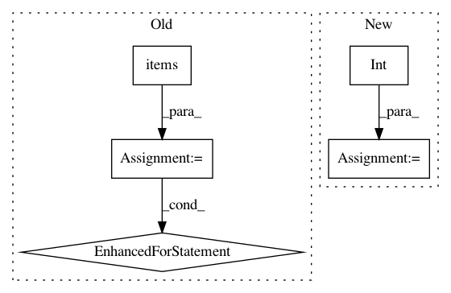

fe41a42ff872debbc18f465f003a314f5ad19d29,nala/utils/tagger.py,TmVarTagger,generate_abstracts,#TmVarTagger#Any#,42
Before Change
exit()
for doc_id, doc in dataset.documents.items():
if doc_id in tm_var:
denotations = tm_var[doc_id]["denotations"]
text = tm_var[doc_id]["text"]
denotations = [text[d["span"]["begin"]:d["span"]["end"]] for d in denotations]
for part_id, part in doc.parts.items():
for ann in chain(part.annotations, part.predicted_annotations):
if ann.class_id == MUT_CLASS_ID and ann.text not in denotations:
ann.subclass = True
After Change
denotations = tm_var[doc_id]["denotations"]
annotations = []
for deno in denotations:
ann = Annotation(class_id="e_2", offset=int(deno["span"]["begin"]), text=text[deno["span"]["begin"]:deno["span"]["end"]]) // todo check whether right offsets (especially the last one)
annotations.append(ann)
// discussion should the annotations from tmvar go to predicted_annotations or annotations?
part.annotations = annotations
In pattern: SUPERPATTERN
Frequency: 3
Non-data size: 5
Instances
Project Name: Rostlab/nalaf
Commit Name: fe41a42ff872debbc18f465f003a314f5ad19d29
Time: 2015-09-20
Author: carsten.uhlig@gmail.com
File Name: nala/utils/tagger.py
Class Name: TmVarTagger
Method Name: generate_abstracts
Project Name: Rostlab/nalaf
Commit Name: fe41a42ff872debbc18f465f003a314f5ad19d29
Time: 2015-09-20
Author: carsten.uhlig@gmail.com
File Name: nala/utils/tagger.py
Class Name: TmVarTagger
Method Name: generate_abstracts
Project Name: Qiskit/qiskit-aqua
Commit Name: c7042ae38552e58476c048237cd80d3fe087cdd7
Time: 2019-02-13
Author: chenrich@us.ibm.com
File Name: qiskit/aqua/utils/entangler_map.py
Class Name:
Method Name: validate_entangler_map
Project Name: thenetcircle/dino
Commit Name: 00cbe3e6d1250ce35742d07211f1f65889f4003e
Time: 2019-07-08
Author: oscar.eriks@gmail.com
File Name: bin/statsd-online-count.py
Class Name:
Method Name: online_count